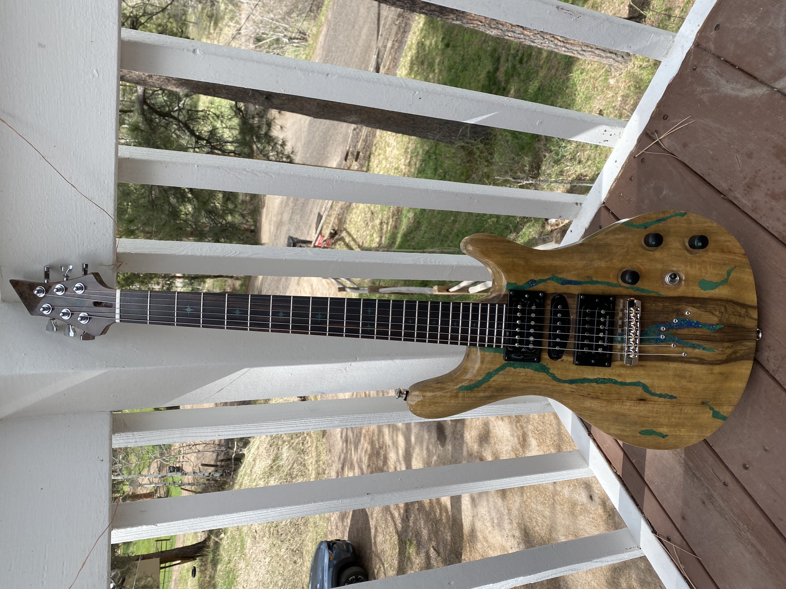
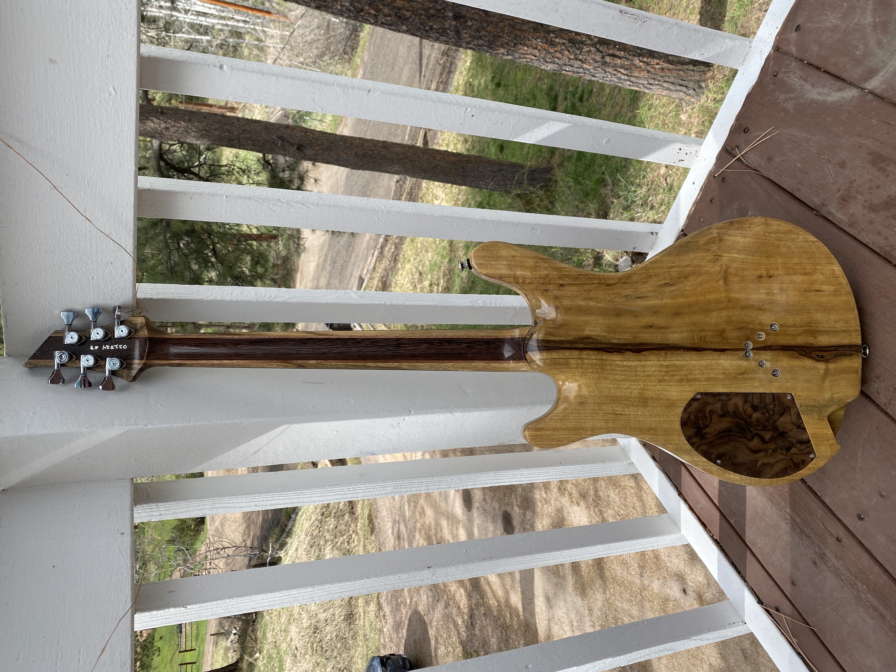
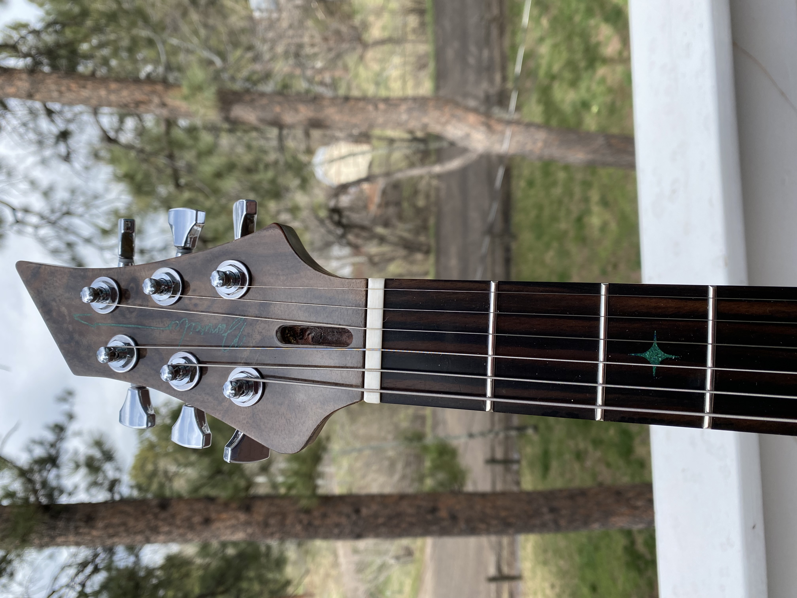
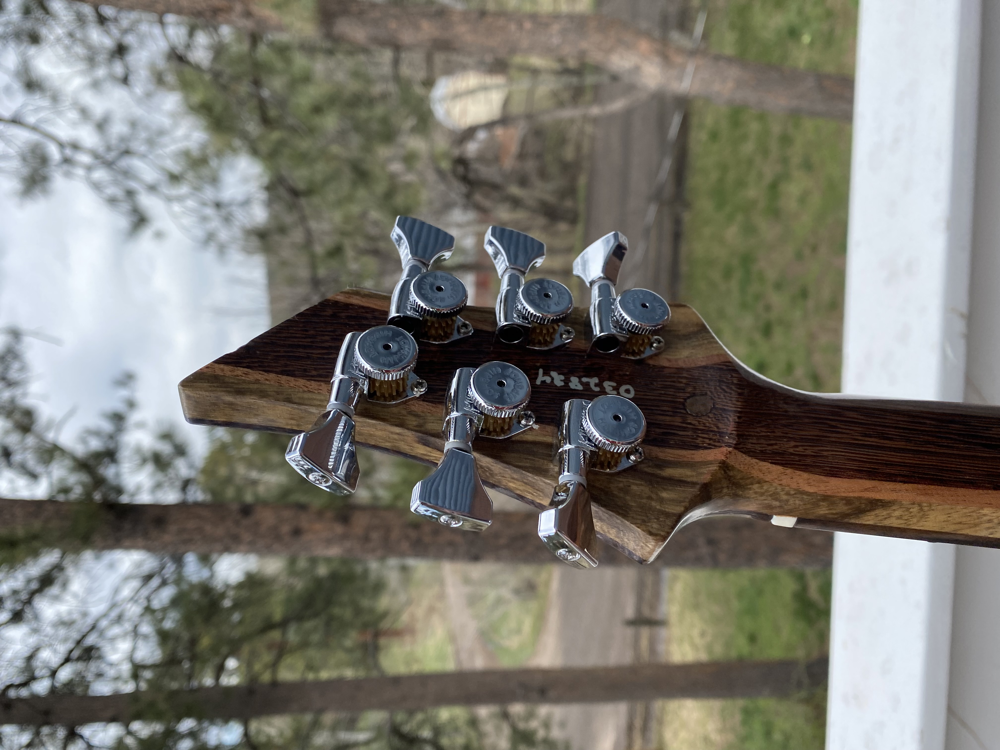

Dorweiler custom build
A black limba build with a laminated neck of black limba, mahogany, and wenge, plus a 24-fret Macassar ebony fretboard with malachite star inlays. The natural wood tones and green-blue inlay accents give this one an organic, earthy look.
The black limba body already has a strong natural character, and the malachite star inlays across the 24-fret Macassar ebony board push it further with a raw, almost geological feel. A black limba, mahogany, and wenge neck keeps the rest of the build grounded in dark, rich wood tones.
Get in touch to find out about the current availability of this instrument.
Get In Touch